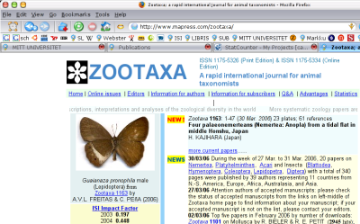
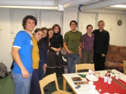
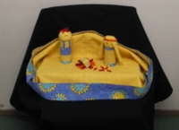
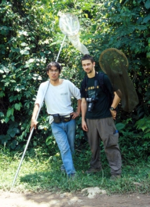
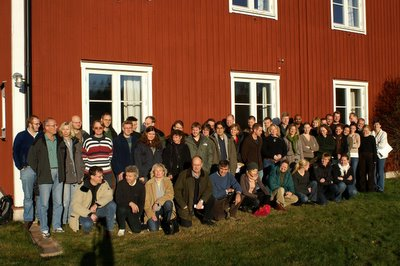

miercoles, abril 05, 2006
Guaianaza en Zootaxa 5
nuestro artículo en la portada de Zootaxa
Luego de casi 3 años desde que ideamos hacer este trabajo, el 30 de marzo finalmente salió publicado en la revista Zootaxa (artículo acerca de mariposas para variar):
 Freitas, A.V.L. & C. Peña. 2006. Description of genus Guaianaza for "Euptychia" pronophila (Lepidoptera: Nymphalidae: Satyrinae) with a description of the immature stages. Zootaxa 1163: 49-59. | BibTeX |
Freitas, A.V.L. & C. Peña. 2006. Description of genus Guaianaza for "Euptychia" pronophila (Lepidoptera: Nymphalidae: Satyrinae) with a description of the immature stages. Zootaxa 1163: 49-59. | BibTeX |
posted by Carlos Peña at 2:55 AM |
sabado, marzo 12, 2006
Compras navideñas 4foto por July Rodriguez
Haciendo las compras en el mercado para preparar la cena navideña. El plato principal fue lasagna, al parecer compraron demasiada pues hasta ahora marzo todavía no se termina!.
posted by Carlos Peña at 8:39 PM |
martes, diciembre 27, 2005
Navidad 3foto por July Rodriguez
Hasta hubo un nacimiento navideño original, creo que lo hicieron de un pedazo de mantel y rollos de papel higiénico.

foto por July Rodriguez
Decoración navideña en Turku, Finlandia. Hicimos mucho esfuerzo para acabar toda la comida, pero no pudimos. Fue una navidad algo seca, solo 2 botellas de vino entre algo de 12 personas.
foto por July Rodriguez
Aquí está la foto de grupo, pero no aparecen todos. Faltan 5 invitados que estaban por allí adelantándose con la comida.
posted by Carlos Peña at 10:57 PM |
martes, noviembre 29, 2005
Más flaco? :-S 2
foto por Andras Kun
Esta foto me acaba de llegar. Fue tomada en Tingo María en febrero del 2003. Aparentemente antes estaba más flaco, o es que ahora estoy más gordo...
Talvez deba perseguir mariposas más seguido.
posted by Carlos Peña at 9:03 PM |
martes, noviembre 22, 2005
Foto de Grupo 1
foto por Sven Jacobsson
Esta es la foto grupal que tomaron durante la conferencia de la semana pasada.
La conferencia se da todos los años en noviembre y se llama "Blodbad" que en castellano sería traducido como "baño de sangre", no se porqué le ponen ese nombre.
Niklas no está en la foto, en esos momentos él estaba durmiendo la resaca en los dormitorios.
posted by Carlos Peña at 4:41 PM |


{kind=link}
{kind=link}
{kind=link}
{kind=link}
{kind=link}
{kind=link}
{kind=link}